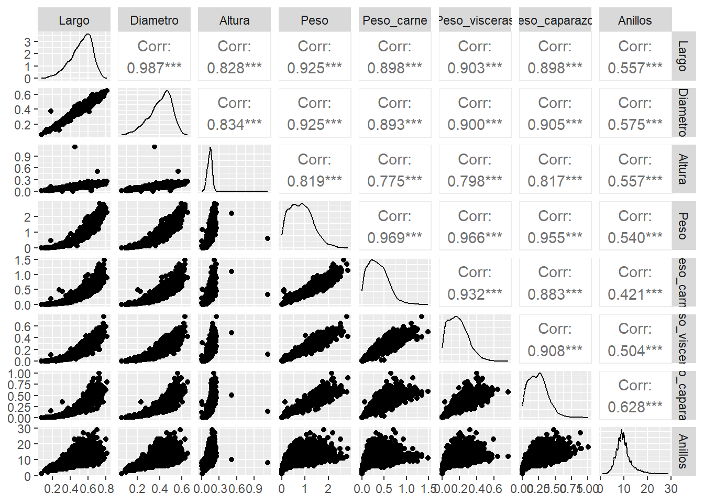

Chapter 2 Comparación de los boxplots
 INTERPRETACION
INTERPRETACION
Los diagramas de caja permiten comparar la distribución y dispersión de las diferentes características físicas.Las
variables relacionadas con el peso pueden presentar valores alejados de la concentración principal de los datos. Estos
valores deben ser identificados como posibles observaciones atípicas y no necesariamente como errores.Las variables de
dimensiones físicas permiten observar la variabilidad en el tamaño de los individuos de la muestra.
# Análisis de la variable categórica Sexo
## Sexo n Porcentaje
## 1 F 1307 31.29
## 2 I 1342 32.13
## 3 M 1528 36.58data2 %>%
ggplot(aes(x = Sexo)) +
geom_bar( fill = "#FFE1FF", color = "#CD96CD" ) +
labs( title = "Distribución del sexo", x = "Sexo", y = "Frecuencia" ) + theme_bw()
INTERPRETACION
El gráfico permite observar la cantidad de individuos pertenecientes a cada categoría de Sexo. La comparación de las frecuencias permite determinar si existe un predominio de alguna categoría o si la distribución de los individuos es relativamente equilibrada.
# Análisis bivariado
data2 %>%
ggplot(aes(x = Largo, y = Anillos)) +
geom_point( alpha = 0.4, color = "#EEAEEE" ) +
geom_smooth( method = "lm", se = TRUE,
color = "#8B668B") +
labs( title = "Relación entre largo y número de anillos", x = "Largo", y = "Número de anillos" ) +
theme_bw()## `geom_smooth()` using formula = 'y ~ x'
INTERPRETACION
El gráfico permite observar la relación entre el largo del abalone y el número de anillos. La tendencia general permite evaluar si los individuos con mayor longitud tienden a presentar un mayor número de anillos.
data2 %>%
ggplot(aes(x = Diametro, y = Anillos)) +
geom_point( alpha = 0.4, color = "#EEAEEE" ) +
geom_smooth( method = "lm", se = TRUE,
color = "#8B668B") +
labs( title = "Relación entre diámetro y número de anillos", x = "Diámetro", y = "Número de anillos" ) +
theme_bw()## `geom_smooth()` using formula = 'y ~ x'
data2 %>%
ggplot(aes(x = Altura, y = Anillos)) +
geom_point( alpha = 0.4, color = "#EEAEEE" ) +
geom_smooth( method = "lm", se = TRUE,
color = "#8B668B") +
labs( title = "Relación entre altura y número de anillos", x = "Altura", y = "Número de anillos" ) +
theme_bw()## `geom_smooth()` using formula = 'y ~ x'
data2 %>%
ggplot(aes(x = Peso, y = Anillos)) +
geom_point( alpha = 0.4, color = "#EEAEEE" ) +
geom_smooth( method = "lm", se = TRUE,
color = "#8B668B") +
labs( title = "Relación entre peso y número de anillos", x = "Peso", y = "Número de anillos" ) +
theme_bw()## `geom_smooth()` using formula = 'y ~ x'
data2 %>%
ggplot(aes(x = Peso_carne, y = Anillos)) +
geom_point( alpha = 0.4, color = "#EEAEEE" ) +
geom_smooth( method = "lm", se = TRUE,
color = "#8B668B") +
labs( title = "Relación entre peso de la carne y número de anillos", x = "Peso de la carne", y = "Número de anillos" ) +
theme_bw()## `geom_smooth()` using formula = 'y ~ x'
data2 %>%
ggplot(aes(x = Peso_visceras, y = Anillos)) +
geom_point( alpha = 0.4, color = "#EEAEEE" ) +
geom_smooth( method = "lm", se = TRUE,
color = "#8B668B") +
labs( title = "Relación entre peso de las vísceras y número de anillos", x = "Peso de las vísceras", y = "Número de anillos" ) +
theme_bw()## `geom_smooth()` using formula = 'y ~ x'
data2 %>%
ggplot(aes(x = Peso_caparazon, y = Anillos)) +
geom_point( alpha = 0.4, color = "#EEAEEE" ) +
geom_smooth( method = "lm", se = TRUE,
color = "#8B668B") +
labs( title = "Relación entre peso del caparazón y número de anillos", x = "Peso del caparazón", y = "Número de anillos" ) +
theme_bw()## `geom_smooth()` using formula = 'y ~ x'
# Correlación
data2 %>%
select(
Largo,
Diametro,
Altura,
Peso,
Peso_carne,
Peso_visceras,
Peso_caparazon,
Anillos
) %>%
ggpairs()
correlaciones <- data2 %>%
summarise(
Largo = cor(Largo, Anillos),
Diametro = cor(Diametro, Anillos),
Altura = cor(Altura, Anillos),
Peso = cor(Peso, Anillos),
Peso_carne = cor(Peso_carne, Anillos),
Peso_visceras = cor(Peso_visceras, Anillos),
Peso_caparazon = cor(Peso_caparazon, Anillos)
)
round(correlaciones, 3)## Largo Diametro Altura Peso Peso_carne Peso_visceras Peso_caparazon
## 1 0.557 0.575 0.557 0.54 0.421 0.504 0.628INTERPRETACION
El coeficiente de correlación de Pearson permite medir la intensidad y dirección de la relación lineal entre cada
característica física y el número de anillos. El coeficiente toma valores entre -1 y 1. Valores positivos indican que, en
general, cuando una variable aumenta, el número de anillos también tiende a aumentar. Valores negativos indican una
relación inversa. Un valor cercano a cero indica una relación lineal débil o inexistente.La correlación permite
identificar qué variables presentan una mayor asociación lineal con Anillos. Sin embargo, una correlación no implica
necesariamente una relación causal entre las
# Relación entre Sexo y Anillos
data2 %>%
ggplot(aes(x = Sexo, y = Anillos)) +
geom_boxplot( fill = "#FFE1FF", color = "#CD96CD" ) +
stat_summary( fun = mean,
geom = "point",
shape = 20,
size = 3,
color = "#8B668B" ) +
labs( title = "Número de anillos según sexo", x = "Sexo", y = "Número de anillos" ) +
theme_bw()
INTERPRETACION
El diagrama de caja permite comparar la distribución de Anillos entre las diferentes categorías de Sexo. La comparación de las medianas, los rangos intercuartílicos y los posibles valores atípicos permite identificar diferencias descriptivas
entre los grupos.
# Conclusión del análisis exploratorio El análisis exploratorio permite conocer las principales características de la base de datos Abalone. La variable Anillos presenta variabilidad entre los individuos, mientras que las variables físicas permiten describir diferentes características relacionadas con el tamaño y peso de los abalones.El análisis gráfico y estadístico permite identificar la distribución de cada variable, posibles valores atípicos y relaciones entre las características físicas y el número de anillos.
Las variables cuantitativas pueden analizarse mediante medidas descriptivas, histogramas, diagramas de caja y correlaciones. Por su parte, Sexo permite realizar comparaciones entre grupos.Estos resultados proporcionan una primera descripción de los datos y sirven como base para realizar posteriormente análisis estadísticos más específicos.